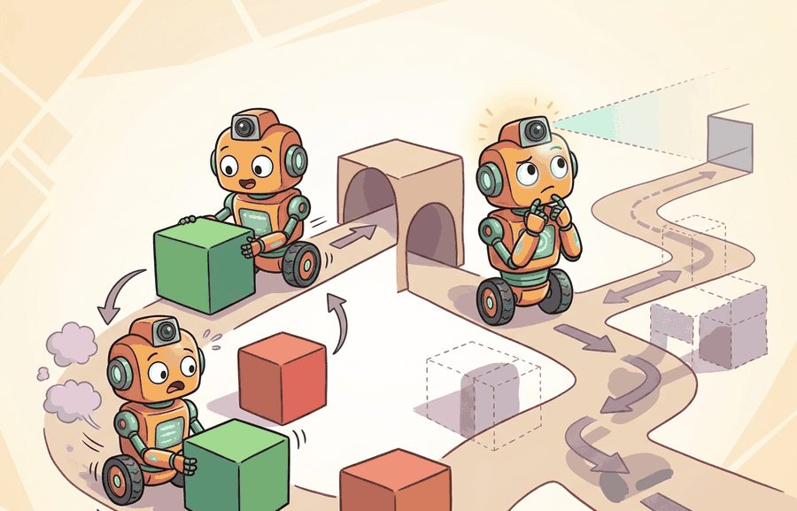
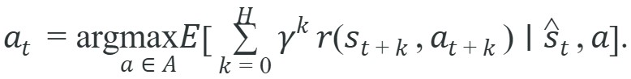

"The reactive agent acts before it thinks. The deliberative agent thinks before it acts. Neither approach is wrong; only the deadline decides which one is."
Section 3.5

The reactive/deliberative split introduced here is formalized as a dual-system architecture in section 3.6, where System 1 corresponds to reactive reflexes and System 2 to deliberative planning. The same trade-off recurs in Part 6 alongside full navigation stacks: section 29.4 shows how a semantic map supports deliberative path planning, and section 30.2 examines breadth-first planning in environments where reactive control alone fails.
A Boston Dynamics robot standing at the edge of a moving conveyor belt has roughly 50 milliseconds to decide whether to step forward or brace. No plan survives that deadline. Yet the same robot, navigating a warehouse aisle it has never seen, must reason about dead ends three turns ahead. One body, two fundamentally different decision modes. The reactive/deliberative divide is the oldest and sharpest fault line in embodied AI, and modern systems still fall apart when designers apply the wrong mode at the wrong moment. By the end of this section you will be able to classify any agent design by its timing assumptions, predict where each breaks down under real physical constraints, and combine the two modes deliberately rather than by accident. Figure 3.5 shows the shared closed loop that both modes run inside; the only thing that changes between them is how much lookahead the Decision box spends before the loop closes.
Watch a housefly outmaneuver your hand for thirty seconds, then watch a chess grandmaster spend three minutes on a single move: both are winning, and the gap between them, microseconds of reflex versus minutes of foresight, is the entire subject of this section. The same body often needs both, and the hard part is knowing which clock is running.
The key question in Reactive vs. deliberative agents is practical: what must the agent know, what can it observe, what action is available, and what evidence shows that the action worked under the stated conditions?
A representation earns its place when it changes the measurable action interface. In reactive vs. deliberative agents, the reader should keep asking which decision becomes easier, safer, or more reliable.
For Reactive vs. deliberative agents, the practical design rule is to make the interface inspectable before optimization begins: inputs, outputs, units, latency, bounds, and failure labels should all be visible in the saved artifact.
Once that interface is visible, the single most important property to read off it is timing, because that is what separates the two modes. The reactive and deliberative split is a timing decision, not a model-complexity decision: the question is not which agent is smarter but which one can answer before the environment changes. A reactive policy chooses $a_t = \pi(o_t)$ from the current observation or a short memory. A deliberative agent evaluates possible futures and chooses an action or plan that scores well under a model using discounted cumulative reward over a finite horizon, often written as:

The horizon $H$ measures how far the agent looks ahead, $\gamma$ discounts later rewards, and $r$ encodes the task objective.
So far: a reactive policy $\pi(o_t)$ reacts from the current observation alone, a deliberative agent instead searches over a horizon $H$ using the discounted-reward objective above, and the choice between them is a timing decision, not a measure of which agent is smarter.
Choosing the wrong mode carries a concrete cost. In practice, a reactive controller on a 1 ms interrupt loop typically responds to a sudden obstacle in under 2 ms. A deliberative planner searching the same scenario with a 50-node tree typically takes 80-150 ms. In that interval, a robot moving at 1 m/s has already closed 8-15 cm of the gap. Figure 3.5A makes this concrete. On a shared obstacle-avoidance scenario the reactive agent acts in microseconds with no world model, while the deliberative agent plans a path but pays a latency cost. Use reactive control when the deadline is shorter than planning time, or when the local cue is sufficient. Use deliberation when the immediate best action can trap the agent, such as pushing an object into a corner before grasping it. Most practical designs combine both in a hybrid architecture: reflexes guard safety while planning handles irreversible choices. A reactive reflex that cannot see around corners and a deliberative plan that arrives too late are both failures, just at different timescales.
Waymo's production fleet separates a reactive obstacle-avoidance module (running at roughly 100 Hz on lidar returns) from a deliberative route planner (running at 10 Hz over a semantic map). When a cyclist cuts in front of the vehicle, the reactive layer applies braking within 10 ms without waiting for the planner; the planner then reroutes around the disruption over the next few hundred milliseconds. This split is not a software convenience: the reactive layer operates within the braking distance window (roughly 7 m at city speeds), where a 100 ms planning delay would already mean a collision.
Input: task deadline $d$, estimated planning time $t_\pi$, lookahead horizon $H$, policy $\pi$, reward function $r$, discount $\gamma \in (0,1)$, observation $o_t$
Output: selected action $a_t$ and architecture label (reactive or deliberative)
When tuning the planning horizon $H$ in a deliberative controller, start by measuring the environment's mean time-to-change (the average interval between significant state transitions) and set $H$ so that one planning cycle completes in under half that interval. In ROS 2's nav2_bt_navigator, the parameter max_planning_duration defaults to 5000 ms; in dynamic environments this routinely produces plans that are stale before execution begins, and lowering it to 200-500 ms is usually the first fix. A non-obvious shortcut is to run the deliberative planner on a coarsened occupancy grid (an occupancy grid is a discretized map where each cell stores the probability that it is occupied by an obstacle; cell size roughly 2x the robot footprint) for the initial path search, then refine only the selected segment at full resolution, which cuts planning latency by 60-80% without meaningfully increasing path length.
In an embodied system the handoff between layers is a physical contract, not just a software interface. For a Franka Panda arm the reactive joint-torque controller runs on a 1 kHz real-time kernel; it accepts a 7-DOF (degrees of freedom) torque vector and must return the next command within 1 ms or the hardware watchdog triggers an emergency stop. The deliberative planner above it operates at 10-25 Hz, producing Cartesian waypoints that the reactive layer converts to joint commands via the Jacobian pseudoinverse, where the Jacobian is the matrix relating joint velocities to end-effector velocity and its pseudoinverse gives the least-squares joint motion that realizes a desired Cartesian motion. The invariant that keeps this safe is that the reactive layer never waits for the planner: if no new waypoint arrives within one control cycle, it holds the last joint configuration and applies gravity compensation. Any log that shows joint torque commands stalling or spiking above the rated 87 N-m limit on the outer links is direct evidence that the handoff boundary failed, either because the planner sent a kinematically infeasible waypoint or because network jitter delayed the message past the reactive layer's deadline.
The reactive/deliberative split is sharpest on a task where the locally best move is a trap. The example is a small grid with a wall: the agent starts at the bottom-left, the goal is across the wall, and the only gap is at the top. A reactive policy that greedily reduces straight-line distance presses into the wall and stalls; a deliberative policy that searches the model with breadth-first planning finds the detour through the gap.
from collections import deque
GOAL = (4, 2)
WALL = {(2, 0), (2, 1), (2, 2)} # vertical wall, gap only at top (y=3)
MOVES = [(-1, 0), (1, 0), (0, -1), (0, 1)]
def dist(p): # Manhattan distance to goal (sum of horizontal and vertical grid-step distances, ignoring obstacles), used here as the reactive agent's greedy heuristic
return abs(GOAL[0] - p[0]) + abs(GOAL[1] - p[1])
def step(p, m):
n = (p[0] + m[0], p[1] + m[1])
if not (0 <= n[0] <= 4 and 0 <= n[1] <= 3) or n in WALL:
return p # blocked: stay put
return n
def reactive(p): # greedy: minimize distance now
return min(MOVES, key=lambda m: dist(step(p, m)))
def deliberative(p): # BFS over the world model -> first move
frontier, seen = deque([(p, None)]), {p}
while frontier:
cur, first = frontier.popleft()
if cur == GOAL:
return first if first else (0, 0)
for m in MOVES:
nxt = step(cur, m)
if nxt not in seen:
seen.add(nxt)
frontier.append((nxt, first if first else m))
return (0, 0)
for name, agent in [("reactive", reactive), ("deliberative", deliberative)]:
p, steps = (0, 0), 0
for _ in range(20):
p = step(p, agent(p)); steps += 1
if p == GOAL:
break
print(f"{name:12s} reached={p == GOAL} steps={steps} end={p}")reactive greedy policy minimizes Manhattan distance one step at a time and stalls at the wall, while the deliberative BFS routine tags each frontier node with its first move and returns the detour up through the gap at (2,3). Only the searching agent reaches the goal.Trace the deliberative agent's first decision from the start cell (0,0), goal (4,2), with the wall blocking (2,0), (2,1), (2,2). BFS expands the frontier level by level and tags each node with the first move that reached it. Level 0: frontier = [(0,0)]. Level 1: from (0,0) we enqueue (1,0) tagged move (1,0) and (0,1) tagged move (0,1); the move (-1,0) and (0,-1) stay put and are already seen. Level 2: from (1,0) we reach (1,1) and try (2,0) which is wall-blocked, so it stays at (1,0) and is skipped; from (0,1) we reach (1,1) [already seen] and (0,2). Notice (2,0) is never entered: the greedy reactive agent, which only minimizes Manhattan distance, would have picked exactly that blocked move and stalled. BFS keeps expanding up the left column to (0,3), then rightward along the top row (1,3), (2,3) [the gap], (3,3), and down to (4,2). The first move tagged on that winning path is (0,1), "go up." So the deliberative agent's very first action is upward, away from the goal in straight-line terms but onto the only path that actually reaches it. Reactive distance at (0,1) is 5, worse than staying at distance 6's neighbors, which is precisely why the reflex never chooses it.
NASA's Perseverance rover runs AutoNav, a deliberative path planner that builds a local terrain map and searches for a safe route over several meters, paired with a reactive hazard-avoidance reflex that halts the rover the instant wheel-slip or an unexpected obstacle is detected. Because the 20-plus-minute Earth-Mars light delay makes teleoperated reflexes impossible, the onboard split lets the rover plan deliberately while still stopping itself within one sensing cycle when the ground gives way.
Expected output: the wall blocks every distance-reducing move, so the reactive agent stalls and never reaches the goal. The deliberative agent plans a path up to the gap, across, and down to the goal. This is the core trade. Deliberation pays a search cost per decision, since it can expand the whole reachable set, but it escapes local traps a reflex cannot see. The reactive agent's greedy heuristic has a genuine local minimum at the wall, which is exactly where lookahead earns its cost. On mazes with a single bottleneck passage, a reactive greedy policy typically needs on the order of thousands of random-restart episodes to stumble through by chance (the exact count depends on maze size and branching), while a deliberative BFS planner solves the same maze in a single episode because it can see the whole reachable set rather than only the local gradient. This is why deliberation is not "slower" in a meaningful sense here: it pays a fixed per-decision search cost but avoids the exponential retry cost the reactive policy incurs by construction.
The BFS fragment above exists to make the reactive/deliberative boundary visible, not to ship. In production the two layers map onto separate maintained stacks. For the deliberative layer, ROS 2's nav2 provides drop-in global planners (NavFn, Smac Hybrid-A*) and a behavior-tree navigator; for arm planning, MoveIt 2 wraps OMPL samplers. For the reactive layer, nav2's DWB or TEB local controllers run the inner loop at controller frequency, and on real legged hardware Boston Dynamics' Spot SDK exposes a reactive locomotion layer beneath its waypoint API. When the reactive layer is itself a learned policy, LeRobot supplies the policy APIs and datasets (for example ALOHA bimanual sets) and OpenVLA or pi0 slot into the deliberative role. Adopt these only after the section has made the timing budget, validity-window logging, and safe-stop fallback explicit, because every one of those stacks assumes you have already decided who owns the deadline.
The grid example fixed why the mode matters. This recipe turns it into a repeatable build order, so the same trade is decided deliberately rather than discovered after a failure.
A common assumption is that reactive agents are "dumb" and deliberative agents are "smart," and therefore that a better robot always uses more deliberation. This is wrong in embodied AI: the two modes are not ranked by intelligence but by timing contract. A reactive policy can encode highly sophisticated learned behavior (such as a neural reflex trained on millions of examples) while still committing to an action within a single sensor cycle, and a deliberative planner that runs too slowly relative to the environment's rate of change will produce worse real-world outcomes than a well-tuned reactive controller. The correct mental model is that reactive and deliberative control are constraints defined by the deadline: if the environment changes faster than planning can complete, deliberation is the wrong tool regardless of how powerful the planner is.
Deliberative agents fail in practice when the world changes faster than the planning cycle. A concrete case: Boston Dynamics' early navigation stacks used a planner that recomputed a global path every few hundred milliseconds. On terrain where a foothold collapsed mid-step, the new plan arrived after the fall had already started. The lesson is not that deliberation is wrong, but that any plan has a validity window, and the reactive layer must take over when the deadline for the current plan expires. A deliberative agent that does not know when to stop deliberating is more dangerous than a pure reflex, because it commits to a stale plan with apparent confidence.
A deliberative plan is like a weather forecast printed on paper: the moment you print it, it starts going stale. A forecast made at 6 a.m. is still useful at noon, but by the following morning the weather has moved on and the paper tells you nothing true about today. The validity window is simply the interval during which the forecast and the world still agree closely enough to act on. A robot's plan expires the same way: conditions shift, and the agent must recognize when its printed forecast describes a world that no longer exists.
Why the validity window matters physically. A robot body cannot pause while the planner catches up. Actuators continue executing the last commanded trajectory, so a stale plan translates directly into physical displacement: at 0.5 m/s a 200 ms overrun moves the platform 10 cm along a path that may no longer exist. On uneven terrain or among moving obstacles, that gap is the difference between a safe footfall and a fall.
How to enforce it. Each plan is timestamped at generation. The reactive layer compares elapsed time against a configured validity window (typically half the mean obstacle-change interval). When elapsed time exceeds the window, the reactive layer discards the plan and applies a hold or safe-stop policy until the planner produces a fresh one. In ROS 2 nav2 this is the controller_frequency and max_planning_duration pair: if planning exceeds the controller period, nav2 cancels the goal and re-plans from the current pose.
A robotics team using reactive vs. deliberative agents should log not only final success, but intermediate observations, chosen actions, controller status, and recovery events. The logs reveal whether the method is solving the task or merely passing the easiest episodes.
Reactive agents have excellent reflexes. Deliberative agents have excellent reasons for being late.
1. Learned meta-controllers that switch modes at runtime. Rather than hand-coding the reactive/deliberative boundary, recent work trains a controller to predict, from task context and timing measurements, which mode will be faster and safer. NVIDIA's GROOT (2024) and related work on hierarchical option-critic architectures demonstrate that the switching policy itself can be learned end-to-end, with the meta-controller adapting its planning budget to environment dynamics in real time rather than using a fixed frequency.
2. Diffusion-based reactive policies with implicit long-horizon structure. Diffusion Policy (Chi et al., 2023, deployed in 2024 hardware demonstrations) and its successors such as Consistency Policy (2024, Stanford IRIS Lab) show that a single denoising network can encode both fast reflexive responses and multi-step trajectory structure. The key insight is that the number of denoising steps acts as a continuous knob between reactive (one step, very fast) and deliberative (many steps, full trajectory) behavior, collapsing the classical binary into a spectrum.
3. Language-conditioned deliberation with reactive safety guards. Systems such as OpenVLA (2024, UC Berkeley) and pi0 (Physical Intelligence, 2024) place a vision-language model (VLM) in the deliberative role, issuing high-level skill commands via a vision-language-action (VLA) interface, while a low-level neural reactive controller runs at full sensor rate and overrides any command that would violate contact or force limits. This mirrors the dual-system (System 1 / System 2) design formalized in the next section, and the separation is now the dominant architecture in general-purpose manipulation research.
Open problem: How should a robot decide, in real time and without human labeling, when its current reactive policy is operating outside its training distribution and deliberation is needed? Current systems use hand-tuned thresholds on sensor variance or planning-cycle latency. A principled online uncertainty estimator that triggers deliberation exactly when the reactive policy is unreliable, without incurring planning cost otherwise, remains unsolved and would have immediate practical impact on safety-critical manipulation and legged locomotion.
Can you name the observation, state estimate, action, success metric, and most likely failure mode for reactive vs. deliberative agents? If not, the system boundary is still too vague.
Reactive vs. deliberative agents becomes useful when it is tied to a closed-loop contract for how perception, estimation, planning, learning, and control are arranged into a system. The contract names the observation stream, the action representation, the timing budget, the safety boundary, and the result artifact. That is the bridge between a readable concept and a system a skeptical builder can test.
Keep three claims separate: the conceptual claim, the systems claim, and the evidence claim. A clear explanation, a clean API, and one successful rollout each prove something different, and conflating them hides which part actually works.
| Tool or Library | Role in This Topic | Builder Advice |
|---|---|---|
| ROS 2 | separates system modules while preserving message contracts and timing | Use it when the hand-built contract is clear and the experiment needs repeatable runs. |
| MuJoCo | gives architecture choices a repeatable simulated world for stress tests | Use it when the hand-built contract is clear and the experiment needs repeatable runs. |
| LeRobot | anchors modern policy architectures in reusable datasets and policy APIs | Use it when the hand-built contract is clear and the experiment needs repeatable runs. |
For Reactive vs. deliberative agents, a robust implementation starts with one inspectable baseline whose artifact records observations, actions, units, timestamps, seeds, termination reasons, and the perturbation applied. The maintained-tool version is useful only if it preserves that schema and lets the comparison remain construct-matched.
When a robot falls, stalls, or collides during testing, how do you know whether to fix the reflex or the planner?
When reactive vs. deliberative agents fails, avoid labeling the whole method as weak. First assign the failure to perception, state estimation, planning, control, timing, data coverage, or evaluation. Then rerun one controlled perturbation that isolates the suspected cause. This pattern turns a disappointing rollout into a reusable diagnostic asset.
A good test varies the deadline and the need for lookahead separately. In a surprise-obstacle test, the reactive layer should avoid collision even if the planner has not finished. In a long-horizon rearrangement test, the deliberative layer should outperform a reflex because it can preserve future options. If both tests show the same behavior, the architecture probably does not contain the separation it claims.
Reactive vs. deliberative agents is useful when it makes the perception-action loop more reliable, not when it merely adds a more impressive model name.
Design a method-matched experiment for Reactive vs. deliberative agents. Specify the environment, observation schema, action interface, metric, and one perturbation that targets the section's core assumption.
Beginner (weekend): Build a grid-world agent in Gymnasium that switches between a reactive greedy policy and a BFS deliberative planner based on a configurable deadline threshold; log which mode fires each step and plot the success rate versus deadline setting. The key challenge is instrumenting the timing accurately enough to show the crossover point where deliberation stops paying off.
Intermediate (1-2 weeks): Implement a two-layer controller for a simulated mobile robot in PyBullet or MuJoCo where a 100 Hz reactive obstacle-avoidance reflex (based on proximity sensor readings) runs concurrently with a 5 Hz ROS2-style deliberative path planner; demonstrate that the reactive layer correctly overrides stale plans when a new obstacle appears mid-execution. The key challenge is enforcing plan validity windows so the robot never executes a path that was computed before the obstacle existed.
Intermediate-plus (2 weeks): Use LeRobot to train a learned reactive policy on a pick-and-place task in Isaac Lab, then wrap it with a deliberative task sequencer that decides the order of picks; compare task completion rate against a pure reactive baseline and a pure planner baseline across at least three object layouts. The key challenge is defining a clean interface between the learned reflex and the symbolic sequencer so the sequencer can query whether a grasp is feasible before committing to a pick order.
Goal: measure empirically the crossover point where a reactive policy beats a deliberative one as the environment changes faster. Tools needed: Python 3, gymnasium (use FrozenLake-v1 with is_slippery=False as a tiny grid, or the Worked Example grid above), and time.perf_counter for timing. Setup: wrap each agent so that on every step it is given a budget of B milliseconds; the BFS deliberative agent must return its current-best first move if it exceeds B, otherwise it falls back to a random move, while the reactive greedy agent always returns within microseconds. Move the goal or toggle a blocked cell every k steps to simulate a changing world. What to vary: sweep the budget B over {0.05, 0.5, 5, 50} ms and the change interval k over {1, 3, 10, never}. What to observe: plot success rate and mean steps-to-goal for both agents against B and k. You should see deliberation dominate when B is large and k is high (slow-changing world, generous budget), but collapse below the reactive baseline when k=1 (the plan is stale before it executes) or when B is too small to finish a search. Mark the (B, k) contour where the two curves cross: that line is the timing contract from the Theory section, made visible from data rather than asserted.
Section 3.6 explains dual-system designs and their roots.
Brohan, A. et al.. "RT-2: Vision-Language-Action Models Transfer Web Knowledge to Robotic Control." (2023). https://arxiv.org/abs/2307.15818
A central reference for locating VLM and VLA models in embodied control stacks.
Todorov, E., Erez, T., and Tassa, Y.. "MuJoCo: A physics engine for model-based control." (2012). https://mujoco.org/
A widely used simulator for architecture and control experiments.
Quigley, M. et al.. "ROS: an open-source Robot Operating System." (2009). https://www.ros.org/
The systems reference for modular robot software and message-passing architecture.